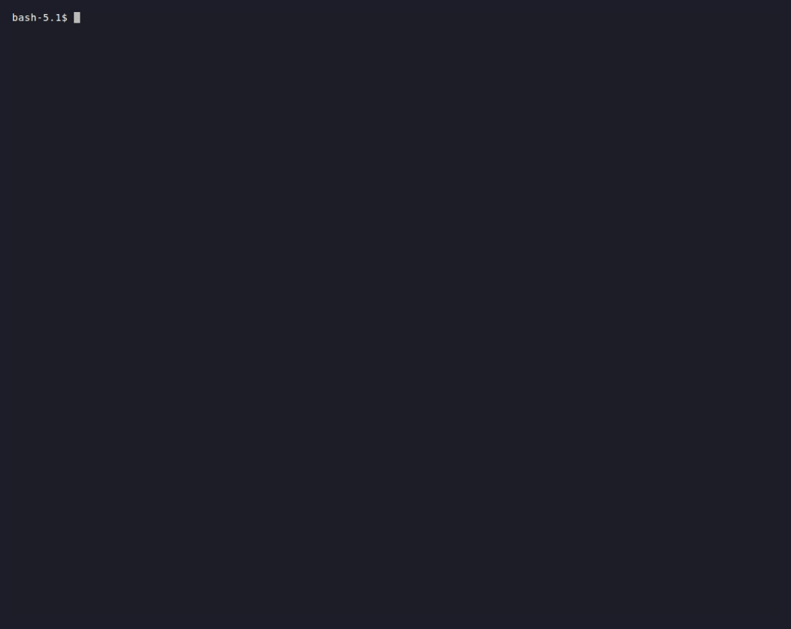

Примеры¶
В examples/ живут одиннадцать запускаемых примеров (в репозитории, не в
пайплайне сборки): десять полноценных приложений и tour, который изолирует
примитивы. Это эталонные реализации
рецептов, паттернов и
port-матрицы — канонические примеры разбиты на пакет steps/
(стадии) + тонкие web.py/chat.py/main.py.
Все демо работают и с ключами API, и без них: настройте .env (скопируйте
.env.example) ради LLM/эмбеддера/изображений — или оставьте фолбэк на
детерминированный демо-режим.
Чат-демо с сессиями (knowledge, devops, repair) строят свой web-слой на
каноническом контракте reactifact.chat + reactifact.web — каждое поставляет
только доменные хуки (агенты, входная модель, терминальный ответ), а
SSE-транспорт и сохранение сессий берёт из фреймворка.
starter_app — копипастибельное веб-приложение поверх quick-кейсов¶
Что показывает: один FastAPI-процесс, который можно склонировать и
запустить: структурированный вызов, RAG с цитатами, LLM с тулами и чат с
сессиями — плюс дашборд трасс по всем запускам. Это тонкая надстройка над
reactifact.quick, а провайдер выбирается from_env(): без
ключа → офлайн/детерминированные фолбэки (RAG всё равно отвечает из
knowledge/ с цитатами); OPENROUTER_API_KEY → OpenRouter;
OPENAI_BASE_URL → любой OpenAI-совместимый эндпоинт. Копируй директорию и
меняй домен.
knowledge — мультиисточниковый чат с доказательствами¶
Что показывает: поиск fan_out_sources по файловым и CSV-источникам →
ленивую materialize_doc → извлечение доказательств → проверку утверждений →
ответ с провенансом; детерминированный CSV-расчёт (Spreadsheet → Calculation).
uv run python ./examples/knowledge/web.py # FastAPI/SSE + трейс-дашборд
uv run python ./examples/knowledge/chat.py # интерактивный CLI
Ключевые файлы: steps/ (common, router, search, evidence, calc, lifecycle),
agents.py, web.py.
medic_lab — лаборатория гипотез¶
Что показывает: один вопрос рождает конкурирующие гипотезы; каждая исследуется
по пулу доказательств; скорится по числу подтверждений/опровержений (скор
вычисляется, а не угадывается); HITL-управление через PendingQuestion;
честный отчёт при нехватке доказательств; concurrency_limit (LLM-агенты = 2,
глобальный лимит = 6).
devops — инструментальный агент с HITL¶
Что показывает: HITLLMAgent + LLM-роутер инструментов (маршрутизация —
отдельный структурный шаг, StructuredLLM), мутации Kubernetes/GitLab/Ansible с
подтверждением человеком (каждая — необратимая операция, которую LLM не может
выдумать сам); трейс-дашборд на create_trace_router. Плюс слой trust & safety:
guardrails.py определяет кастомный guardrail (деструктивное изменение
прода требует тикета CHG-) и редактирование секретов, подключаемые к
RuntimeResources одной строкой — ops-политика блокирует инъекции и
неподтверждённые прод-изменения, редактирует PII/секреты и проверяет сырой ввод.
А ещё он оценивает собственный трафик: online_eval.py сэмплирует обслуженные
прогоны из трейс-стора (trace_source, кастомные routed/routed_to), тегирует
прошедшие eval / проваленные eval:failed, а web.py монтирует
create_online_eval_router (POST /api/evals/run). Отдельные демо (без LLM и
сети):
uv run python ./examples/devops/web.py # SSE UI + трейс-дашборд
uv run python ./examples/devops/safety.py # кастомные guardrails, end-to-end
uv run python ./examples/devops/online_eval.py # online-eval по прогонам
repair — перепланирование под бюджет (русский по замыслу)¶
Что показывает: чат и данные каталога намеренно на русском — контраст с
другими англоязычными примерами сознателен (локализация — продуктовый вопрос, не
вопрос фреймворка). Поток: сбор фактов → варианты дизайна от LLM → 3 фото-превью
→ план → детерминированная смета из каталога → HITL-одобрение → жалоба на
бюджет запускает пересборку с более ранней стадии с откатом через
_downstream_resets. Явное детерминировано; LLM — только там, где это
действительно генерация.
chat — минимальный одно-модельный многоходовой разговор (офлайн)¶
Что показывает: простую форму multi-turn в ~80 строк — одна модель
сообщения (ConversationMessage), которую пишут обе стороны. Conversation
записывает ходы (create_turn) и рендерит поток (transcript/state);
ChatMemory с keep= ограничивает его (WindowPruner) — всё через
ChatAssistant. Без LLM и API-ключа (отвечает детерминированный echo-агент).
Гетерогенная форма (разные типы на вопрос/ответ) — в примерах
repair/devops/knowledge, через Transcript/MessageSpec — см.
Multi-turn и чат.
forklab — ветвление и слияние (§39-§40)¶
Что показывает: детерминированное исследование альтернативных состояний —
один вопрос, две стратегии исследования на собственных форках
(Context.branch()); трёхсторонний merge(), который либо чисто объединяет,
либо бросает явный MergeConflict (§40 — никакого молчаливого выбора);
оценщик слиянного состояния, чей Answer связан supported_by с находками
обеих веток. Полностью офлайн (§67) — дело в семантике состояния, а не в
модели. Флаг --conflict демонстрирует цикл «конфликт → политика разрешения».
uv run python -m examples.forklab.main # счастливый путь
uv run python -m examples.forklab.main --mermaid # граф провенанса слияния
uv run python -m examples.forklab.main --conflict # явный MergeConflict + политика
Тот же паттерн — естественная основа для переписывания medic_lab: гипотезы
становятся настоящими форками вместо tag-маршрутизации каналов.
fintech_audit — аудируемый и воспроизводимый ответ¶
Что показывает: финансовый вопрос («какова вариация cloud-расходов за Q2
и требует ли политика одобрения?») с ответом из CSV транзакций, CSV бюджета и
документа политики. История аудита целиком: цифры считаются на чистом Python
(модель — не источник истины, §67); каждый производный артефакт ссылается на
то, откуда он взялся; reactifact.audit.build_report рендерит ответ с
хешем содержимого каждого артефакта и context_sha256 всего запуска; а
повторный прогон даёт тот же хеш — это и проверяет
reactifact replay <store> --session <id> --verify <hash> на сохранённой
сессии. Офлайн, без ключа.

См. также reactifact/audit.py (build_report,
context_hash, report_to_markdown) и Наблюдаемость —
как отправить такой запуск в приёмник с redactor=.
outbox — внешние эффекты как закоммиченное состояние¶
Что показывает: контракт outbox в семи детерминированных кейсах: шаг
записывает effects.act(...) вместо I/O; Runtime(dispatcher=...) отправляет
после коммита; повторная деривация, дубли в одном поколении, слитые ветки,
replay, failure→retry и app-owned retry-wrapper сохраняют одну доставку.
Без LLM и сети; фейковый dispatcher делает счётчик видимым.
См. Outbox в production — at-least-once-контракт и app-owned drain/retry-политика.
repo_agent — destructive-инструмент за одобрением¶
Что показывает: HITLLMAgent-ассистент по крошечному репозиторию.
read_file и run_tests выполняются сразу; git_commit объявлен
@tool(destructive=True), поэтому runtime превращает решение модели в
PendingQuestion(kind="approve") и выполняет коммит только после
context.resume(...). Провайдер scripted, поэтому демо офлайн и
детерминировано.
tour — примитивы фреймворка в четырёх маленьких сценах¶
Что показывает: то, что легко пропустить в большом приложении:
типизированные артефакты с version_history / diff / compact;
типизированные входы с Latest, Wakes(False) и
Consume(..., debounce=True); SQLite-сессию, которая переживает перезапуск,
возобновляет pending-событие и реплеит прошлый коммит; и опциональный
LLM-шаг. Все сцены по умолчанию офлайн, а model идёт через провайдера только
с --llm.
uv run python -m examples.tour.main # все четыре сцены, офлайн
uv run python -m examples.tour.main --scene state # версии + компакция
uv run python -m examples.tour.main --scene durable --db /tmp/tour.sqlite3
uv run python -m examples.tour.main --llm --scene model
С --llm from_env() читает examples/tour/.env (скопируйте .env.example);
без провайдера сцена model печатает честный детерминированный бриф. См.
examples/tour.
Тесты¶
.venv/bin/python -m pytest # 1111 тестов (6 пропущены без TEST_PG_DSN)
.venv/bin/mypy # строгая типизация по всему репозиторию
.venv/bin/ruff check # линтер
uv sync ставит группы dev+web из pyproject.toml; uv build собирает только
wheel reactifact (примеры и docs в пакет не входят).